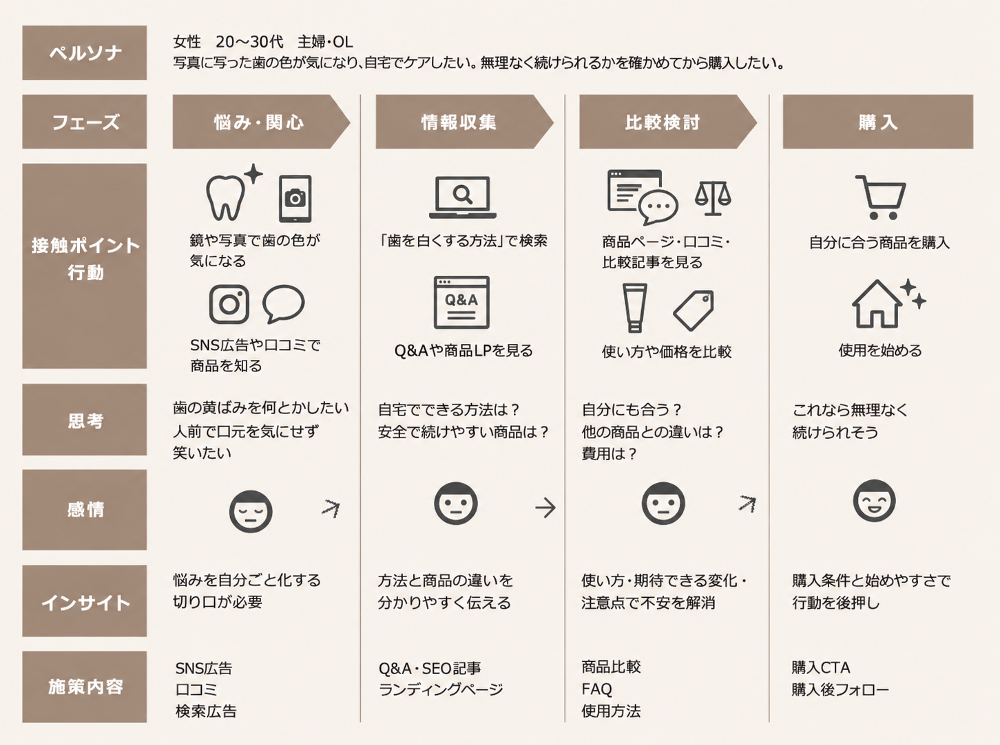

タカリライト後
ZERO式LP制作・原稿比較用テストページ
Googleドキュメントの原文を掲載しています。秘訣1〜3の本文と、執筆途中の秘訣4が比較対象です。図版は既存素材を仮配置しています。
元のGoogleドキュメント／原稿確認：2026年10月30日

【秘訣01】CV直前の不安解消から逆算する、売れるLPの考え方
ZERO式売れるLPは「CVボタンを押す直前の心理」から逆算して設計します。
秘訣01では、商材や顧客心理に合わせた最適な入口（購入・問合せ・リード獲得）の選び方から、離脱を防ぐ不安払拭、CVエリアからFVへ遡って構成を組む「ゴールから逆算するストーリー設計」の手順まで、ユーザーが迷わずに行動するLPの考え方を解説します。
ZEROが考える売れるランディングページとは
ランディングページ（LP）とは、購入・問合せ・リード獲得などのコンバージョン（CV）獲得に特化した縦長のWebページです。
リスティング広告やSNS広告からの流入の受け皿として、商品・サービスの価値を的確に伝え、ユーザーを購入や問合せに導く役割を担います。
原稿の制作メモ
※画像※
通販系のLP実績をもとに挿入画像を再構成する。

ZEROがランディングページで目指しているのは、「Web上で24時間成果を出し続ける一流の営業マン」を構築することです。
同じ商品を、同じ顧客に提案しても、三流の営業マンと一流の営業マンでは、情報の伝わり方も最終的な成約率も大きく変わります。
これはLPでもまったく同じで、伝え方と構成次第でコンバージョン率（CVR＝Conversion Rate）に大きな差が出ます。
商材や顧客を深く理解しないまま、商品の特徴を決まったセールスの型に当てはめて並べるだけなのか。
それとも、最初の切り口で興味を引き、続きを読みたくなるフックをつくった上で、
「ユーザーが求めている情報」を「分かりやすく伝えやすい順序」「分かりやすい画像」で不安や疑問を解消し、買わない理由を無くしていくのか。
両者の決定的な違いは、商材の強み（USP＝Unique Selling Proposition）と深層ニーズ（顧客インサイト＝ユーザーも気付いていない本音や無意識の欲求・動機）を深く分析した上で、「ユーザーが買うまでの心理変化」を逆算して作られているかどうかです。
売れないLPは、売り手の都合（商品の特徴や機能）を順番に並べるだけにとどまります。
一方、一流の営業マンとして機能するLPは、ユーザーが最後に何に迷い、どのリスクを恐れて購入を躊躇するのかを見抜き、その不安や疑問を先回りして解消していきます。
この「CV直前の心理から逆算して構成を組み立てるアプローチ」こそが、ZERO式売れるLP制作の原点です。
単なる「綺麗なデザインの受け皿」を作るのではなく、ユーザーの購買心理を読み解き、真に求められている情報を分かりやすく届けることで、購入や問合せへのハードルを取り除いていきます。
ZERO式売れるLPは成果を出し続ける「一流の営業マン」。
深層ニーズ分析の精度こそがLPのCVRを決定づける。
「購入・問合せ・リード獲得」目的にあったLP
商品やサービスによって、初めてページを訪れたユーザーが「その場ですぐに購入できるもの」もあれば、「まずは相談や体験を経てから慎重に検討したいもの」もあります。
だからこそ、商材特性と顧客心理に適した入口「コンバージョン（CV）」を設計することが、ランディングページ運用で成果を出す前提条件になります。
原稿の制作メモ
※LP実績※
「直接購入型」「問合せ型」「リード獲得型」のそれぞれのLP実績


参考：既存LP実績を仮配置しています。
最初に決めることは「見た目のデザイン」ではなく「ユーザーに取らせる行動（CV）」です。
例えば、手頃な消耗品と数十万円の高額サービスでは、購入を決断するまでの検討期間も、必要とされる判断材料（安心感・エビデンス）も根本から異なります。
さらに、ターゲットが「BtoC（個人向け）」か「BtoB（法人向け）」かによっても、意思決定の構造は大きく変化します。
個人の感情や直感で購入が決まりやすいBtoC商材に対し、複数の担当者や上長・役員の合議・決裁を経て稟議を通す必要があるBtoB商材では、社内検討用の資料や費用対効果の論理的な裏付けが不可欠です。
このように、商材単価・検討プロセス・取引形態（BtoB / BtoC）を正確に見極め、主に以下の3つの型から最適な基本設計を選択します。
原稿の制作メモ
※下記①〜③は見やすいように表にしてください。
| LPの型 | 特徴 | 適した商材 | 設計の要点 |
|---|---|---|---|
| ①直接購入型（主にBtoC向け・EC・単品通販など）： | 特徴： LP上でそのまま決済・注文を完結させる設計。 | 適した商材： コスメ・サプリメント・食品・アパレルなど、低〜中単価で商品の価値や利用イメージが直感的に湧く個人向け商材。 | 設計の要点： 初回購入のハードルを下げるお試し価格や返金保証、離脱（カゴ落ち）を防ぐ入力フォームの簡略化。 |
| ②問合せ型（BtoB商材・高単価BtoCサービスなど）： | 特徴： 個別見積もり、相談、商談、対面カウンセリングなどをゴールとし、直接の営業・提案フローへ繋ぐ設計。 | 適した商材： 法人向けシステム・業務支援サービス（BtoB）、士業、住宅・リフォーム、高価格帯のパーソナルジムなど。 | 設計の要点： 導入実績や事例、他社比較による圧倒的な安心感。「まずは無料で概算見積・相談ができる」という安心感を与え、相談時の心理的抵抗を解消すること。 |
| ③リード獲得型（主にBtoC向けサービス・検討期間の長い商材など）： | 特徴： LINE公式アカウント登録、無料セミナー参加、資料請求、無料会員登録、簡易診断などを入口とし、見込み客の連絡先を取得する設計。 | 適した商材： 美容クリニックやエステ、スクール・習い事、金融・投資相談、転職・キャリア支援など、「いきなり申し込むには不安がある」「まずは役立つ情報や特典がほしい」ユーザー層。 | 設計の要点： 「友だち追加で限定クーポン」「1分でわかる無料肌診断」など、登録するメリット（オファー）を明確にし、ステップ配信やメルマガ等で継続的に価値を伝えて本契約・来店へと引き上げること。 |
数千円のサプリなら納得することですぐに購入できますが、数十万円の語学留学を初見で即決する人はいません。即決できる商品はその場で決済まで完結させ、じっくり比較検討が必要なサービスは資料請求や無料相談を最初の接点にします。
このように「ユーザーがその場で決断できるか」という心理的なハードルに合わせて最適な入口（CV）を選ぶことこそが、売れるLP制作の第一歩です。
LPは見た目の好みや思い込みで決めない。
商材特性と顧客心理に最適な入口（CV）を見極める。
CV直前の「最後の不安」を解消し、ゴールから逆算する設計
商材特性と顧客心理に適した入口（CV）を決めた後、多くの制作会社では「ファーストビュー（FV）でどんなキャッチコピーを書くか」というページ上部の制作から着手してしまいます。
しかし、ZERO式売れるLPにおいて、真っ先に着手することは「ユーザーがCVボタンを押す直前の心理設計」です。
どれほどFVのデザインやキャッチコピーが優れていても、ユーザーが購入や問合せの直前で「本当に大丈夫か？」「損をしないか？」と立ち止まってしまえば、一流の営業マン（売れるLP）とは言えません。
ボタンを押す直前に生じる「4大フリクション（心理的摩擦）」
ランディングページに複数のCVエリア（行動を促すポイント）を設置しても、ユーザーがボタンを押す直前には、無意識のうちに以下の「最後の迷い・ためらい」があることを理解する必要があります。
①手間の不安：
「入力にどれくらい時間がかかるのか？ 面倒ではないか？」
②金銭・契約の不安：
「知らないうちにお金がかからないか？ 無理な定期縛りはないか？」
③営業対応の不安：
「問合せした後、しつこい営業電話や売り込みが来ないか？」
④行動後の不安：
「ボタンを押した後、具体的に何が起きるのか分からない」
CVエリアの「マイクロコピー」で最後の不安を消す
ユーザーの不安を解消したいからと言って、長々と説明することはできません。
そこで、ボタンの直上・直下に添えるわずか1〜2行の「マイクロコピー」や、ボタン文言そのものを工夫します。
①「たった1分で入力完了」「会員登録不要」で手間の不安を消す
②「完全無料」「強引な営業・お電話は一切いたしません」で安心感を与える
③「送信」ではなく「無料で資料を取り寄せる」「今すぐ限定クーポンを受け取る」と表記し、押した直後に手に入る価値を明確にする
CVエリアから上流へと遡って構成を組み立てる
「どんな不安を、どの言葉で解消してボタンを押させるか」というCVエリアを確定させてから、上流（FV方向）へと逆順に構成（ワイヤーフレーム）を組み立てていきます。
原稿の制作メモ
※下記①〜⑤は流れが分かるような表にしてください。
| 設計の順番 | 伝える内容 |
|---|---|
| ①CVエリア設計： | マイクロコピーで直前の不安を消し、クリックの敷居を極限まで下げる |
| ②直前の納得材料： | 決断の後押しとなる証拠（実績数値・利用者の声・他社比較） |
| ③提案・オファー： | 自社が提供できる具体的な解決策と競合優位性 |
| ④問題提起・共感： | ユーザーが抱える課題の言語化 |
| ⑤ファーストビュー（FV）： | ターゲットの関心を一瞬で掴むメインコピー |
このように「CV直前の心理」を深く理解し、LPのゴール（CVを獲得すること）に到達させるための設計から逆算して構成を組み立てることで、ランディングページ全体に一本の強固なロジックが通り、ユーザーが途中離脱することなく自然に購入や問合せへと滑り落ちる導線が完成します。
わずかな工夫でユーザーの不安を解消して背中をひと押し。
CVエリアから逆算するストーリー設計が売れるLPの基礎になる。

【秘訣02】CVの先にある成約率・LTV・許容CPAから逆算するLP設計
秘訣01で設計した導線を実際の利益に直結させるためには、感覚や思い込みを排した「最終利益からの逆算」が不可欠です。
ここでの解説は、特にページ上で決済が完結しない「問合せ型・リード獲得型」を主軸に据えて紐解いていきます。なお、「限界利益・LTV・許容CPA／CPC」の計算ロジックは、通販などの直接購入型ビジネスにとっても共通して極めて重要な指標となります。
秘訣02では、これらの試算方法に加え、回収スピードを最大化するための「投資回収期間の設計」や、質の低いリードを事前に弾いて成約率を跳ね上げる「スクリーニング設計」までを実務ベースで解説します。
成約率・LTV・限界利益の事前シミュレーション
多くのLP制作や広告運用では「CV数をいかに増やすか」という表面的なコンバージョン率（CVR）ばかりが注目されます。
しかし、事業の本来の目的は「問い合わせの数を増やすこと」ではなく、「最終的な売上と手元に残る事業利益を最大化すること」に他なりません。
どれほど安価に問い合わせを獲得できても、その後の商談に進まなかったり、継続購入されなかったりしては、LP制作費も広告費も回収できません。
LP制作に着用する前に算出しておくべき「5大指標」
ZERO式売れるLP制作では、ランディングページの構成に着手する前に、ビジネスモデルに基づいた数値シミュレーションの実施を強く推奨しています。
ZERO式売れるLP制作では、構成やデザインに着手する前の数値シミュレーションを大切にしており、特にページ上で購入が確定しない「問合せ型・リード獲得型」では、①限界利益 ➔ ②LTV ➔ ③成約率 ➔ ④許容CPA ➔ ⑤許容CPCという5大指標を順に逆算し、「1クリックいくらまで広告費を投じられるか」の損益分岐点をあらかじめ可視化します。
なお、指標③の「成約率」は商談を挟むビジネスモデル向けの数値ですが、限界利益・LTV・許容CPA／CPCの概念は、通販などの直接購入型モデルにおいても必須指標となります。
| 指標（5大指標） | 指標の意味 | 算出の目的・役割 | 計算ロジック |
|---|---|---|---|
| ① 限界利益 | 売上から原価や販売変動費を差し引いた利益 | 1回の成約で手元に残る利益を確定し、精度の高いLTV算出の基礎とする | 売上 － 原価・変動費 |
| ② LTV | 1顧客が生涯を通じて自社にもたらす累計利益（顧客生涯価値） | 限界利益にリピート回数や契約継続月数を掛け合わせ、顧客1人の総価値を算出する | 限界利益 × リピート回数（継続月数） |
| ③ 成約率 | 獲得した問い合わせ（CV）のうち、商談を経て本受注に至る割合 | 問い合わせがどれだけ実際の成約に繋がるかの歩留まりを把握する | 受注件数 ÷ 有効問い合わせ数 |
| ④ 許容CPA | 利益を残すために1件の問い合わせ獲得にかけられる広告費の上限 | 採算ラインを意識した広告運用のために、1CVあたりの上限コストを確定する | LTV × 成約率 |
| ⑤ 許容CPC | 広告の1クリックにいくらまで支払えるかの損益分岐ライン | クリック単価がいくら以内なら採算が取れるかを明確にする | 許容CPA × 想定CVR |
もし事前調査でターゲットキーワードの平均クリック単価が許容CPCを上回っていた場合、広告運用を開始する前から採算が合わない（赤字になる）ことが確定してしまいます。
その場合は闇雲に出稿するのではなく、商品単価やアップセルによる「限界利益やLTVの見直し」を行うか、少ないアクセスでも確実にCVを獲得するために「LPのCVR改善戦略」を設計し直さなければなりません。
LP制作とは単なるWebサイト制作ではなく、その後の広告運用を見据えた事業戦略そのものです。この5大指標を事前に明確に算出できていなければ、事業目標を達成させるための「売れるLP」を制作することはできません。
CV数への執着はLP運用の落とし穴。
「許容CPC」まで逆算する5大指標の設計が、成功のカギ。
広告費の回収スピードと資金効率を左右する「投資回収期間」
5大指標によって「許容できる広告費の上限（許容CPA・CPC）」を算出できても、それだけで安心してはいけません。
特に問合せ型・リード獲得型で見落としてはならないのが、「投じた広告費を何ヶ月で回収し、次の投資へ回せるか」という回収期間（資金効率）の視点です。
通販などの直接購入型と異なり、問合せ型・リード獲得型はCVが発生した時点では売上が1円も立っておらず、手元からは広告費の支払い（キャッシュアウト）だけが先行している状態です。
一般的に問合せ型・リード型の商材はLTV（顧客生涯価値）が高い場合が多いですが、「LTV（継続取引や追加発注を含めた生涯利益）が高いから大丈夫」と過信してしまうと、商談や納品・入金までのタイムラグによって回収が長期化し、手元の資金の巡りが悪くなって広告の拡大や次の施策への再投資が停滞してしまいます。
投資対効果を最大化する「回収期間」の基準設定（購入型モデル）
ZERO式売れるLPでは、許容CPAを確定させると同時に、「投じた広告費を何ヶ月以内に全額回収（損益分岐点に到達）させるか」という回収期間を考慮してLP構成を設計します。
①初回購入での即時回収モデル：
理想は、初回の購入代金だけで広告費を回収できる設計です。これが成立すれば、投じたコストが即座に手元へ循環するため、資金効率を落とすことなく安心して広告運用の規模を拡大できます。
②リピート・定期購入を前提とした回収モデル：
商材あたりの限界利益が高くなく、初回購入で全額回収できない場合であっても、一般的には「最長でも3〜6ヶ月以内」に累計の限界利益で広告費を回収できるラインを基準として設計し、キャッシュアウトが先行しすぎない安全圏を保ちます。
投資回収を加速させる「LPとオファーの連動設計」（問合せ型・リード獲得型）
一方、商談やLINE・メールでの詳細案内を経て成約に至る問合せ型・リード獲得型では、回収スピードを早めるために「成約までのリードタイムを縮め、CVの確度を高くするLP設計」が不可欠になります。
①初回商談の確度と単価を引き上げるオファー設計：
LP内で単なる「資料請求」にとどまらず、課題が明確な層に向けた「個別診断」「初期導入パッケージ」などを提示し、初回商談から具体的な契約や初期費用を伴う受注へ直結させやすくします。
②成約リードタイムを短縮する導線・フォーム設計：
フォーム入力時に予算感や導入希望時期などの条件をあらかじめ確認し、確度の高い見込み客を優先して商談化することで、問い合わせから受注・入金までの期間を短縮します。
このように、広告投資の回収構造はビジネスモデルによって本質的に異なります。Web上で即時決済が完結する購入型（EC・通販など）では、「初回のCV（購入）時点で広告費が確実に回収できるか」が損益分岐の最大の焦点となります。
一方で、問合せ型・リード獲得型（BtoB・士業・高額サービスなど）では、CVが発生した時点では売上が1円も立っておらず、「CV＝売上ではない」からこそ、その後の商談・契約・入金までを含めた回収期間の計画を事前に握っておくことが、広告運用を成功させるための必須条件となるのです。
LTVの高さだけに頼った広告運用は投資回収を遅らせる原因。
投資回収期間に沿った訴求軸を確立させるのが売れるLP。
質の低いリードを事前に弾く「スクリーニング設計」
許容CPAと投資回収ラインを把握した後に直面する最大の罠が、「広告管理画面上のクリック単価を安く見せようとして、間口を広げすぎてしまうこと」です。
CVのハードルを極端に下げ、「誰でもお気軽に」「無料相談」あるいは通販であれば「初回99円・条件なし」などと広く浅く訴求すれば、見かけ上のCV数は増え、CV単価は一時的に安くなります。
しかし、その実態は「予算が全く合わない層」「情報収集だけの冷やかし」、さらには購入型であれば「客単価が低すぎて、広告費の回収が難しい層」が多く混ざっている状態です。
結果として最終的な成約率や継続率が激減し、「1件の受注・売上を獲得するために投じた本当のCPA（最終顧客獲得単価）」はむしろ高騰して投資回収ラインを割り込みかねません。
さらに、問合せ型やリード獲得型であれば不毛な営業工数の圧迫、購入型であれば広告費すら回収できない赤字販売の大量発生など、ビジネスモデルに応じた深刻な損失を招きます。
だからこそ、ZERO式売れるLPでは、目先のCV単価の安さではなく、自社の利益に繋がる本命顧客だけを集め、対象外のユーザーを自然に足切りする「スクリーニング設計」が不可欠と考えています。
なお、後述する3つの選別手法は、特に「問合せ型・リード獲得型」の営業効率化に直結しますが、直接購入型モデルにおいても、LTVを高めるための優良顧客を選別する上で共通して重要な考え方となります。
LPで優良顧客を選別する3つの方法
① ターゲット条件の明示（「誰のためか」を限定し、本命顧客の熱量を高める）：
「年商◯億円以上の企業様向け」「月間◯件以上のリード獲得を目指す事業者様限定」と対象を絞り込みます。
ミスマッチな流入を排除するだけでなく、該当する顧客に「まさに自社のための専門サービスだ」という強い当事者意識を持たせ、本命顧客の成約意欲をLP上で高めます。
② 価格帯・発注基準の事前提示（「相見積もり疲れ」をなくし、提案から商談を始める）：
問い合わせ数を稼ぐために価格を隠すのではなく、「最低受注金額◯◯万円〜」「平均導入費用レンジ」をあらかじめ明示します。
予算感を許容した見込み客だけが集まるため、商談の場が不毛な価格交渉にならず、「自社の課題をどう解決してくれるか」という具体的な提案フェーズから始められます。
③ 入力フォームの戦略的設計（適切な負荷をかけ、営業の初動を最速化する）：
あえて「検討時期」「予算規模」「現在の課題」などの選択項目を必須化します。
情報収集だけの冷やかしを弾くと同時に、商談前に温度感や顧客ニーズを正確に把握できるため、優先度の高い本命顧客に対して工数をかけるなど、営業の初動効率と成約率を最大化できます。
間口をあえて狭めることで、一時的にLP上のCVRは低下することがあります。
しかし、最終的な成約率が劇的に引き上がることが期待できるため、営業工数あたりの売上効率と広告の投資対効果（ROI＝Return On Investment）は最大化されます。
目先のCV単価に囚われない。
適切なスクリーニング設計で成約率と事業利益にコミットする。

【秘訣03】顧客と競合を徹底解剖する戦略的3C分析マーケティング
秘訣02で算出した利益を獲得するには、市場の中で勝てる独自のポジションが不可欠です。
秘訣03では、顧客（Customer）の深層ニーズを言語化する手法や、競合（Competitor）LPの死角を暴くリサーチ法、そして自社（Company）の強みを再発掘して勝負所を定める手法を解説します。
3つの要素を徹底的に分析し、競合の手札を踏まえた上で「評価軸の再定義」を行う、実践的な3C分析の構築ステップを紐解きます。
【顧客分析】検索意図と行動心理から探る「深層ニーズの言語化」
まず最初に着手する顧客分析とは、「自社の商品やサービスを求めている見込み客が、どんな状況でどんな悩みを抱え、何を求めて行動しているのか」を解き明かす作業です。
年齢や性別、地域といった表面的な属性情報を集めることではなく、「その人がどんなきっかけで課題を感じ、どういう心理状態でお金を払ってでも解決したいと考えるのか」という感情の動きや行動パターンを深く理解することが本来の目的です。
一方、多くのLP制作では、「30代女性・主婦」といった形式的なターゲット設定だけで制作を進めてしまいますが、同じ年代・性別であっても抱えている悩みや購入動機は人それぞれです。
顕在ニーズの奥にある「深層ニーズ」を掘り起こす
ユーザーが検索窓に入力するキーワード（顕在ニーズ）は、氷山の一角に過ぎません。
そこでZERO式LP制作では、顕在ニーズと深層ニーズ（顧客インサイト）を分析した上で、表面的な属性の枠組みを超え、「その悩みが生まれた背景と感情の変遷（カスタマージャーニー）」を徹底的に解剖します。
◆顕在ニーズ（言葉にできる要望）：
「業務効率化ツールを導入したい」「費用が安いリフォーム会社を探したい」
◆深層ニーズ（無意識の本音・恐れ）：
「面倒な入力ミスで部下に小言を言うストレスから解放されたい」「安物買いの銭失いで家族に後悔されたくない、失敗の責任を負いたくない」
顧客インサイトの抽出プロセス
ユーザーの頭の中にある「本音」は、机の上のアンケートや一般的な属性データだけでは決して見えてきません。
そこで、以下の3つのプロセスで深掘りし、精度の高い仮説を導きます。
① 検索クエリの文脈解読：
単体ワードだけでなく、「比較」「失敗」「デメリット」「相場」などの複合ワードを分析し、購入をためらう警戒心や、他社と比較する際の迷いのポイントを特定します。
② 定性データの一次情報収集：
既存顧客の生の声、営業商談時の「失注・断り文句」、Q&Aサイトのリアルな相談履歴を収集し、表面的な希望ではなく、「購入直前の最後の決め手・躊躇した理由」を言語化します。
③ カスタマージャーニーへの落とし込み：
課題の自覚から情報検索、競合比較、最終決断に至るまでのユーザーの感情変化を一本の線で整理し、「どの心理状態で、どんな言葉と根拠をぶつければ最も心が動くか」を行動マップとして可視化します。
原稿の制作メモ
※カスタマージャーニーの事例

この抽出プロセスを経て完成する「カスタマージャーニー」こそが、売れるLPの成否を分ける設計図となります。
どれほど鋭いキャッチコピーであっても、投げかけるタイミングや内容を誤れば、ただの押し売りに見えてしまいます。
例えば、まだ課題に気づいたばかりの段階でクロージングをかけても響かず、逆に他社と比較して迷っている段階で初歩的な説明を長々と並べても離脱を招くだけです。
カスタマージャーニーによって「どの心理状態のときに、どんな言葉と根拠を提示すれば疑念が晴れ、次の行動へ進みたくなるのか」という感情の変遷を時間軸で可視化しているからこそ、ページをスクロールするごとに自然と納得が深まり、購入や問合せへと導かれる必然の導線が完成します。
顕在ニーズの奥にある「本音」を言語化することがすべての起点。
カスタマージャーニーが、売れるLPの骨格をつくる。
【競合分析】検索上位のLPを徹底解剖する「訴求・弱点リサーチ」
見込み客の深層ニーズ（カスタマージャーニー）が明確になったら、次に着手するのが「競合分析」です。
競合分析とは、「見込み客が自社の商品・サービスと比較検討するライバル企業を特定し、その強み・弱み・集客手法を徹底的に調査する作業」です。
単にライバル企業を観察することではありません。「競合がどんなオファーをして選ばれているのか」「ユーザーが競合に対してどんな不満や不安を抱えているのか（死角）」を客観的に見極めることが本来の目的です。
検索やSNS広告から流入した見込み客は、貴社のLPだけで即決することはほぼなく、必ず検索上位や知名度のある競合と比較した上で判断を下します。だからこそ、顧客分析で掴んだニーズに対して、競合がどのようなオファーや訴求でアプローチしているかを調査する必要があるのです。
競合LPを丸裸にする「4つの解剖フレーム」
ZERO式売れるLP制作では、広告出稿量が多く自然検索でも上位に位置する強力な競合LPをピックアップし、以下の切り口で徹底的に分解・比較することを強く推奨しています。
原稿の制作メモ
※下記は見やすいように表にしてください。
| リサーチ項目 | 分析の着眼点 | 明らかにする要素 |
|---|---|---|
| ① 訴求軸・ターゲット | 誰に対し、どんな切り口で語りかけているか | 価格優先、スピード重視、安心・実績重視、手軽さなど |
| ② 提供オファー（CV） | 最初の接点として何を提示しているか | 完全見積、無料診断、資料請求、サンプル提供、返金保証など |
| ③ 信頼性の裏付け | 顧客をどう納得させているか | 導入実績社数、業界シェア、権威者の監修、ビフォーアフター事例 |
| ④ 競合が語っていない死角 | 読者が感じる不満や不安の放置箇所 | 「追加費用が不明瞭」「大企業向けで敷居が高い」「アフターサポートが不透明」 |
競合が強く打ち出している「強み」の裏側には、必ずユーザーが感じる不満や不安（死角）が潜んでいます。
競合がアピールしている特徴や強みだけでなく、その裏返しにある「触れられていない弱点・ユーザーが不安に思っている死角」を特定することが、自社が選ばれる最大の突破口になります。
競合の戦略を知らずしてWeb広告での勝利はない。
真似るのではなく、自社が選ばれる条件を徹底的に分析する。
【自社分析】独自の強みを発掘し、自社の土俵で勝つ「評価軸の再定義」
顧客分析と競合分析の結果をもとに実施する自社分析とは、「顧客ニーズと競合の状況を踏まえた上で、自社が提供できる独自の価値・強み・客観的な裏付け（エビデンス）を再発掘・整理する作業」です。
自社の思い込みで「ここが自慢の機能だ」と語ることではなく、「競合には真似できず、かつ、ユーザーの深い悩みを確実に解決できる強みは何か」を客観的に棚卸しし、LPで打ち出すべき勝負所（コンセプト）を定めることが本来の目的です。
ZERO式売れるLP制作では、マインドマップ等を活用して現場のこだわりや当たり前の手厚い対応を可視化し、ユーザーを納得させる客観的な裏付け（エビデンス）を徹底的に洗い出します。
ここで多くの企業が陥る最大の失敗は、「業界トップや大手競合の強みに対し、同じ土俵で真っ向から勝負してしまうこと」です。
業界トップ企業が「圧倒的な実績数」や「資本力を活かした安さ」を誇っている場合、後発の企業が同じ指標で競い合っても勝ち目はありません。
重視すべきポイントは、競合の強みを受け流し、あえて自社に有利な評価軸を設定して勝つ「評価軸の再定義」によるポジショニング戦略です。
競合の強みを裏返し、自社の土俵へ引き込む3大アプローチ
①競合の強みを「別の見方」でデメリットとして再定義する：
◆大手（強み：全国対応・マニュアル化）
➔ 裏のデメリット「担当者が毎回変わり、たらい回しにされる」「融通が利かない」
➔ 自社のアプローチ：「地域密着で即日訪問・担当者の顔が見える柔軟対応」
◆低価格（強み：とにかく安い）
➔ 裏のデメリット：「サポートが手薄」「後から追加費用がかかるのではないか」
➔ 自社のアプローチ：「安かろう悪かろうを防ぐ、手厚い専任伴走サポート」
◆多機能（強み：何でもできる）
➔ 裏のデメリット：「機能が複雑すぎて使いこなせない」「設定に挫折する」
➔ 自社のアプローチ：「迷わず直感的に使える、現場目線のシンプル設計」
※単なる言い換えに終わらせず、「なぜ自社ならそれが可能なのか」という体制や実績（エビデンス）をLP上で必ずセットで提示します。
②セグメントを絞り込み「特定の領域で1位」を作る：
競合が「全業種対応」と幅広く構えているなら、自社は「◯◯業界専用」「年商◯億円規模の企業特化」とターゲットを限定します。「自社のようなケースに最も詳しい専門家」として第一想起を獲得します。
③比較表で「正しい選び方の新基準」を提示する：
LP内の他社比較表において、単に自社に◎をつけるのではなく、「本当に見るべき評価基準」そのものを提示します。ユーザーに「そうか、安さだけで選ぶとサポートで後悔するんだ」と気づかせ、自社を選ばざるを得ない心理構造を作ります。
自社の特徴や商材価値を顧客ニーズ・競合他社の弱点と照らし合わせ、「競合の手札が出揃った後だからこそ確実に勝てる独自の切り口（訴求軸）」を確定させます。これがLP全体のブレないコンセプトとなります。
後発企業は業界トップと真っ向勝負を挑んではいけない。
評価基準を再定義するポジショニングが、独自の勝ち筋をつくる。

【秘訣04】疑問を先回りして納得へ導く、売れるストーリーを脚本
秘訣4は執筆途中の原稿です。入稿済みの文章・見出しのみ掲載しています。
3Cの勝ち筋を心に刺さるコンセプトに変える「ビッグアイデア」
ビッグアイデアとは、「3C分析で導き出した自社の勝ち筋（深層ニーズ×競合の死角×自社の強み）を、ターゲットの感情を一瞬で鷲掴みにする『新常識・独自の切り口』として言語化した中心コンセプト」です。
LP運用でよく陥りがちな失敗は、3C分析で整理した「自社の強み」をそのまま「高品質です」「地域密着です」「安心の技術です」と真面目に語ってしまうことです。
これでは競合の中に埋もれ、誰の記憶にも残りません。
ユーザーに「今までの商品と何が違うのか」「なぜこれを選ぶべきなのか」を直感させ、一瞬で前のめりにさせる“新しい視点や驚き”こそがビッグアイデアです。
ビッグアイデアを生み出す3つの視点
本文未入稿
読者の脳内疑問（なぜ？本当に？）を先回りして消す構成順
本文未入稿
流し読み層を逃さない「スキャンライン」と「視覚的メリハリ」
本文未入稿